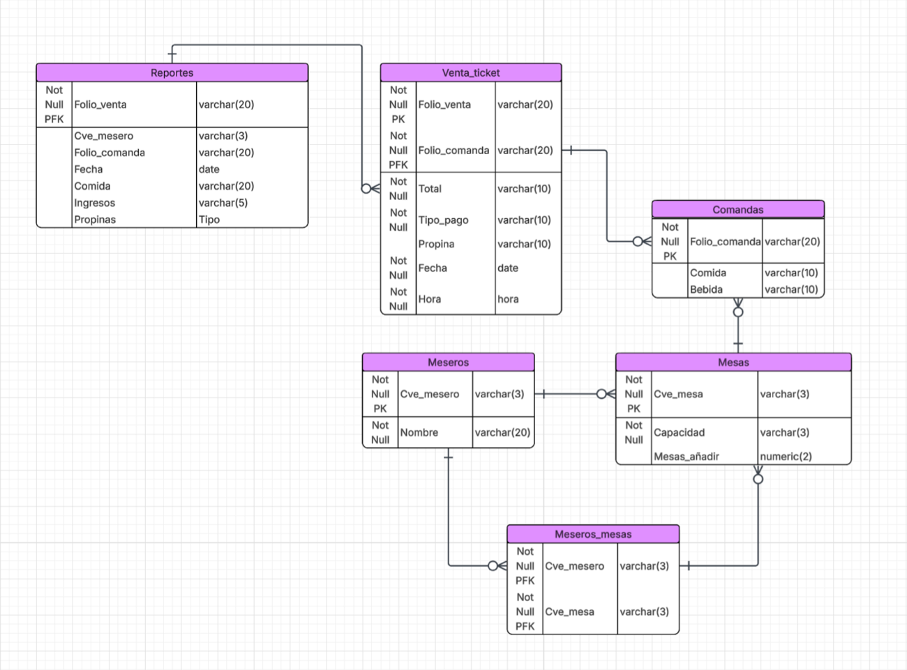
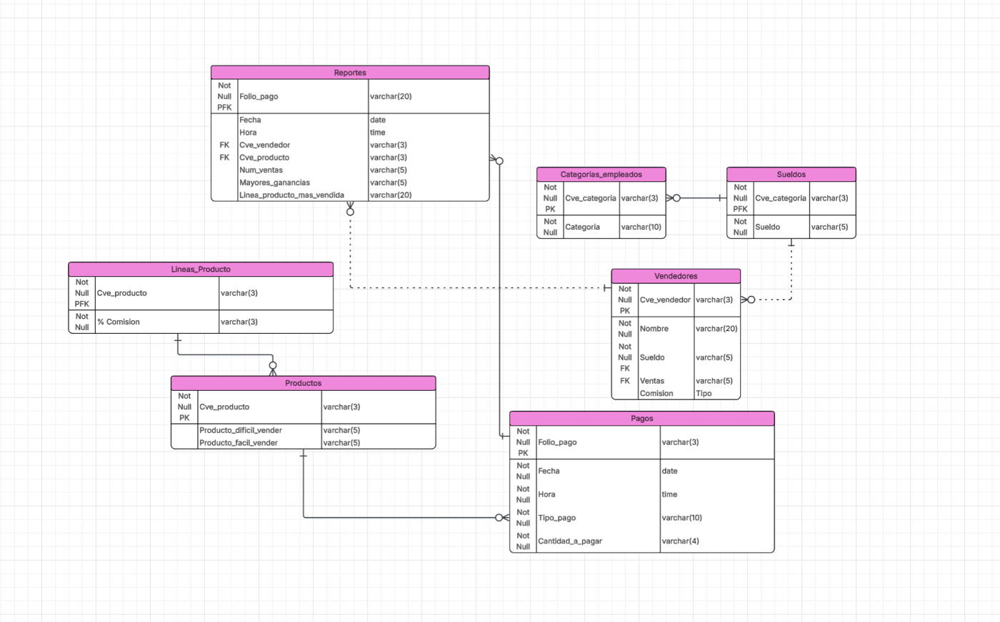

01 · Diseño
Antes de escribir SQL hay que dibujar
La parte que mas me costo del curso no fue la sintaxis, fue decidir que tablas deben existir. Un diagrama entidad-relacion obliga a contestar eso antes de escribir nada: que entidades hay, como se relacionan y cual es la llave de cada una.
Este es el modelo de un restaurante. Lo interesante esta abajo: un mesero atiende varias mesas y una mesa la atienden varios meseros, asi que la relacion no se puede guardar en ninguna de las dos tablas. Se necesita una tabla puente (Meseros_mesas) con llave primaria compuesta.

Y este otro es un sistema de comisiones de vendedores, con categorias de empleado, lineas de producto y pagos.

02 · Normalizacion
De una tabla repetida a cuatro tablas limpias
El ejercicio era normalizar los tickets de una tienda hasta forma normal de Boyce-Codd. La tabla original guardaba todo junto, asi que la fecha, la hora, la caja y el nombre del cajero se repetian en cada renglon de un mismo ticket (en rojo):
| ticket | fecha | hora | caja | cajero | producto | cant. |
|---|---|---|---|---|---|---|
| 101 | 01/01/2003 | 10:50:00 | 1 | Juan | Bocinas 80w | 2 |
| 101 | 01/01/2003 | 10:50:00 | 1 | Juan | DVD Multiregion | 1 |
| 101 | 01/01/2003 | 10:50:00 | 1 | Juan | TV 21" | 1 |
| 127 | 10/02/2003 | 11:00:20 | 2 | Armando | Bocinas 80w | 4 |
| 485 | 11/02/2003 | 16:55:00 | 1 | Aurora | TV 25" | 1 |
| 485 | 11/02/2003 | 16:55:00 | 1 | Aurora | DVD Multiregion | 1 |
Eso no es solo feo: si el cajero cambia de nombre hay que actualizarlo en muchos renglones, y si uno se escapa la base queda inconsistente. La solucion es separar cada cosa en su tabla y unirlas con llaves foraneas.
MySQL · DDLcreate table producto( cve_prod varchar(3) not null, producto varchar(50) not null, primary key (cve_prod) ); create table cajero( cve_cajero numeric(2) not null, cajero varchar(25) not null, primary key (cve_cajero) ); create table ticket ( ticket int not null, fecha date not null, hora time not null, cve_cajero numeric(2), caja numeric(2) not null, primary key (ticket), foreign key (cve_cajero) references cajero(cve_cajero) ); -- Tabla puente: resuelve el muchos-a-muchos entre ticket y producto. -- La llave primaria es compuesta, para que un producto no se repita -- dos veces en el mismo ticket. create table ticket_producto( ticket int not null, cve_prod varchar(3) not null, cantidad int not null, primary key (ticket, cve_prod), foreign key (ticket) references ticket(ticket), foreign key (cve_prod) references producto(cve_prod) );
03 · Consultas
Preguntarle cosas a la base
Estas salen directo de la terminal de MySQL, con su resultado tal cual lo devolvio.
Filtros combinados
Empleados con numero menor a 15, de los departamentos B o C, que no se apelliden Jones.
MySQLmysql> select SURNAME, EMPNUM, DEPT from EMPS
-> where EMPNUM < 15 and DEPT in('B','C') and SURNAME != ('JONES');
+----------+--------+------+
| SURNAME | EMPNUM | DEPT |
+----------+--------+------+
| MARSH | 2 | B |
| PHILLIPS | 14 | C |
+----------+--------+------+
2 rows in set (0,001 sec)Columna calculada con alias
El I.V.A. de la deduccion de cada empleado, con el titulo de la columna cambiado.
MySQLmysql> select EMPNUM, DEDUCTION, DEDUCTION*1.16 AS 'I.V.A' from EMPS; +--------+-----------+----------+ | EMPNUM | DEDUCTION | I.V.A | +--------+-----------+----------+ | 1 | 100.00 | 116.0000 | | 2 | 75.00 | 87.0000 | | 3 | 75.00 | 87.0000 | | 4 | 50.00 | 58.0000 | | 5 | 50.00 | 58.0000 | | 6 | 100.00 | 116.0000 | | 7 | 50.00 | 58.0000 | +--------+-----------+----------+
Contar valores distintos
De cuantas provincias distintas vienen los empleados.
MySQLmysql> select count(distinct PROV) from EMPS; +----------------------+ | count(distinct PROV) | +----------------------+ | 7 | +----------------------+ 1 row in set (0,001 sec)
Busqueda por patron
Departamentos cuyo gerente se apellida Jones, sin saber el nombre completo.
MySQLmysql> select DEPT, CODE from SDEPT where MANAGER like ('%JONES%');
+------+------+
| DEPT | CODE |
+------+------+
| B | 2 |
+------+------+
04 · Triggers
Reglas que la base aplica sola
Un trigger es codigo que se dispara solo cuando algo cambia en una tabla. Lo util es que la regla vive en la base: da igual si la venta entro por la app, por un script o a mano, el descuento de inventario siempre ocurre.
Este es el que mas me gusta de todo el curso. Al registrar una venta descuenta el stock, pero si no alcanza no falla ni deja existencias en negativo: vacia lo que queda y manda el faltante a una tabla de BACKORDER.
DELIMITER //
CREATE TRIGGER actualiza_existencias
AFTER INSERT ON DET_VENTA
FOR EACH ROW
BEGIN
DECLARE exits NUMERIC(3);
DECLARE falt NUMERIC(3);
SELECT EXISTENCIA INTO exits
FROM PRODUCTO
WHERE CVE_PROD = NEW.CVE_PROD;
IF exits >= NEW.CANTIDAD THEN
-- Hay suficiente: solo se descuenta
UPDATE PRODUCTO
SET EXISTENCIA = EXISTENCIA - NEW.CANTIDAD
WHERE CVE_PROD = NEW.CVE_PROD;
ELSE
-- No alcanza: se vacia el stock y el faltante se va a backorder
SET falt = NEW.CANTIDAD - exits;
UPDATE PRODUCTO SET EXISTENCIA = 0
WHERE CVE_PROD = NEW.CVE_PROD;
INSERT INTO BACKORDER (NUM_VENTA, CVE_PROD, CANTIDAD)
VALUES (NEW.NUM_VENTA, NEW.CVE_PROD, falt);
END IF;
END//
Otro: creditos de un estudiante
Al borrar una materia de la matricula, le resta los creditos al estudiante — pero solo si la habia aprobado.
MySQL · TriggerCREATE TRIGGER resta_creditos
AFTER DELETE ON matricula
FOR EACH ROW
BEGIN
DECLARE creditos_asig NUMERIC(2,0);
-- Solo se restan creditos si la materia estaba aprobada
IF OLD.nota IN ('C+','B-','B','B+','A-','A','A+') THEN
SET creditos_asig = (
SELECT créditos FROM asignatura
WHERE asignatura_id = OLD.asignatura_id
);
UPDATE estudiante
SET tot_créditos = tot_créditos - creditos_asig
WHERE ID = OLD.ID;
END IF;
END//
En total escribi 12 triggers: actualizar precios de venta, restaurar existencias al cancelar una venta, validar clientes antes de modificarlos, bloquear el borrado de pedidos, y otros.
05 · Stored procedures
Programar dentro de la base de datos
Un stored procedure es un programa guardado en la base: recibe parametros, tiene variables, ciclos y condicionales. Sirve cuando la logica es demasiado complicada para una sola consulta.
Este aplica descuentos por marca, pero no de golpe: se acerca al precio objetivo en pasos, y los pasos son mas grandes mientras mas lejos este del objetivo. Usa dos ciclos anidados y CASE.
-- Baja progresivamente el precio de los productos de una marca hasta llegar
-- a un precio objetivo que depende del tipo de producto.
DELIMITER //
CREATE PROCEDURE descuentoSegmentado(IN param_marca VARCHAR(20))
BEGIN
DECLARE prod INT DEFAULT 1;
DECLARE max_prod INT;
DECLARE precio DECIMAL(10,2);
DECLARE tipo VARCHAR(20);
DECLARE objetivo DECIMAL(10,2);
SELECT MAX(cve_prod) INTO max_prod FROM PRODUCTO;
WHILE prod <= max_prod DO
SELECT precio_venta, producto INTO precio, tipo
FROM PRODUCTO WHERE cve_prod = prod;
CASE
WHEN tipo LIKE 'DISCO%' THEN SET objetivo = precio * 0.80; -- 20% off
WHEN tipo LIKE 'MONITOR%' THEN SET objetivo = precio * 0.70; -- 30% off
ELSE SET objetivo = precio * 0.75; -- 25% off
END CASE;
-- Se acerca al objetivo en pasos, mas agresivos mientras mas lejos este
WHILE precio > objetivo DO
CASE
WHEN precio > objetivo * 1.5 THEN SET precio = precio * 0.90;
WHEN precio > objetivo * 1.2 THEN SET precio = precio * 0.95;
ELSE SET precio = precio * 0.98;
END CASE;
UPDATE PRODUCTO SET precio_venta = precio WHERE cve_prod = prod;
END WHILE;
SET prod = prod + 1;
END WHILE;
END //
Son 15 procedures en total: el producto mas vendido en un rango de fechas, insertar ventas validando stock, reabastecer productos, calcular cupo disponible de un grupo, comisiones por producto, descuentos segmentados y varios mas.
06 · NoSQL
Cuando lo relacional no es la respuesta
El curso no se quedo solo en MySQL. Tambien investigue las bases de datos no relacionales: los cuatro tipos que existen (documentos, clave-valor, columna ancha y grafos), en que se diferencian de SQL en escalabilidad y estructura, sus ventajas y desventajas, y para que casos conviene cada una, revisando MongoDB, Cassandra, Redis, Neo4j y CouchDB.
Leer la investigacionRetrospectiva
Que haria distinto hoy
De todo lo que entregue, el procedure del producto mas vendido es el que peor envejecio. Funciona y da el resultado correcto, pero lo resolvi con subconsultas repetidas cuando habia una forma mucho mas directa:
MySQL-- Lo que escribi entonces (productoMasVendido): la misma subconsulta -- correlacionada repetida dos veces, una para mostrar la cantidad y otra -- para compararla contra el maximo. Funciona, pero recorre las ventas -- muchas mas veces de las necesarias. -- Lo que escribiria hoy: SELECT p.CVE_PROD, p.PRODUCTO, p.MARCA, SUM(d.CANTIDAD) AS cant_vendida FROM PRODUCTO p JOIN DET_VENTA d ON d.CVE_PROD = p.CVE_PROD JOIN VENTA v ON v.NUM_VENTA = d.NUM_VENTA WHERE v.FECHA_VENTA BETWEEN p_fecha_inicio AND p_fecha_fin GROUP BY p.CVE_PROD, p.PRODUCTO, p.MARCA ORDER BY cant_vendida DESC LIMIT 1;
Con un detalle que vale la pena decir: LIMIT 1 se queda con un solo producto si hay empate, mientras que mi version original devolvia todos los empatados. No es que una este mal y la otra bien — contestan preguntas ligeramente distintas, y eso es justo lo que hay que tener claro antes de elegir.